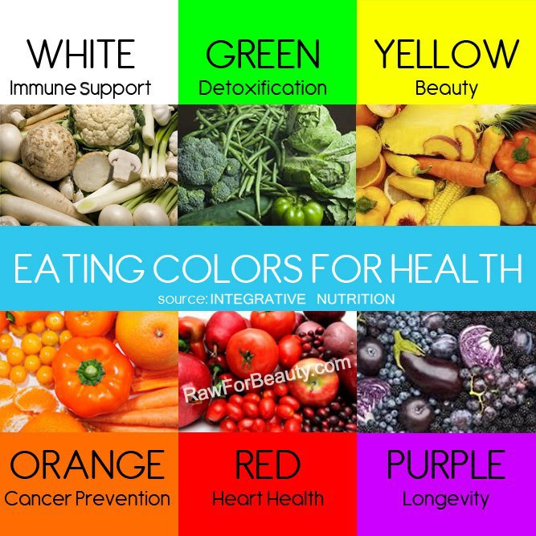

ADAPT AND AVOID

Bad fats:
Desi ghee (70%), dalda ghee (>90%) & coconut oil (90%)- have high saturated fat contents.
Good fats:
Monosaturated fatty acids, Polysaturated fatty acids & Omega-3 fatty acids.
Sources of good fats:
Avocado, Almonds, Walnuts, Flax seeds, Groundnut, Rice bran, Salmon, Olives & Sesame seeds (rich in calcium).
Tran fats(Bad fats):
Trans fats raise harmful LDL cholesterol levels while also lowering beneficial HDL cholesterol.
Found in Cow milk, animal foods, margarines, packed baked foods, fried foods in most fast food
restaurants & hydrogenated oils i.e. dalda ghee & its products. Flax seeds help to reduce trans fats.
White poisons:
Maida, salt, sugar, ghee, pure milk (as it contains ghee) & daily rice (rich in arsenic contents).
Those who are suffering from acidity & gas:
Avoid tea, spicy & fried food. Avoid milk & milk products.
Those who can not do walking exercise or suffering from arthritis
should opt for cycling.
Those who are suffering from low BP:
Walking exercise is only medicine.
Those who are having high uric acid in blood:
Avoid protein diet.
List of negative calorie foods (Preferred):
Vegetables: Cucumber(kheera), asparagus, tomatoes, spinach, lettuce, kale, broccoli, mushrooms,
bell peppers.
Fruits: Apples, grapefruit, papaya, berries, tangerines & lemons.
Fiber rich diets:
Dietary fiber (dietary fibre, roughage) is an essential nutrient required for proper digestion of foods, proper functioning
of the digestive tract at large, and for helping you feel full. A deficiency of fiber can lead to constipation, hemorrhoids,
and elevated levels of cholesterol and sugar in the blood.
Conversely, an excess of fiber can lead to a bowel obstruction, diarrhea, or even dehydration.
Individuals who increase their intake of fiber should also increase their intake of water.
High fiber foods include bran, broccoli, cabbage, berries, leafy greens, celery, squash, beans, mushrooms, and oranges.
Calcium rich diets:
Milk: Milk is the best source of calcium, not only for children but also for adults.
Moreover, the calcium is in a form that can be easily digested and absorbed by your body.
Yogurt: High in protein and containing healthy bacteria for your gut, yogurt is said to
offer 400 mg of calcium in a single serving. Choose non-fattening flavoured yogurt for a satisfying and healthy snack.
Besides milk and yogurt but dairy products like cheese is also a good dose of calcium.
Leafy greens: Many vegetables, especially the leafy green veggies, are rich sources of calcium.
Opt from spinach, turnip, kale, romaine lettuce, celery, broccoli, cabbage, asparagus and mushrooms
or toss all of them into a salad.
Beans: For another rich source of calcium, try kidney beans, white beans or baked beans.
Herbs and spices: Herbs like basil, thyme, cinnamon, mint and spices like garlic not only enhance
the flavour of your food but also provide calcium to your body.
Oranges: Citrus fruits like oranges are not only rich in calcium but also contain vitamin D that
is essential to absorb the calcium in the body. Have it as a fruit or squeeze out its juice and have it as a breakfast.